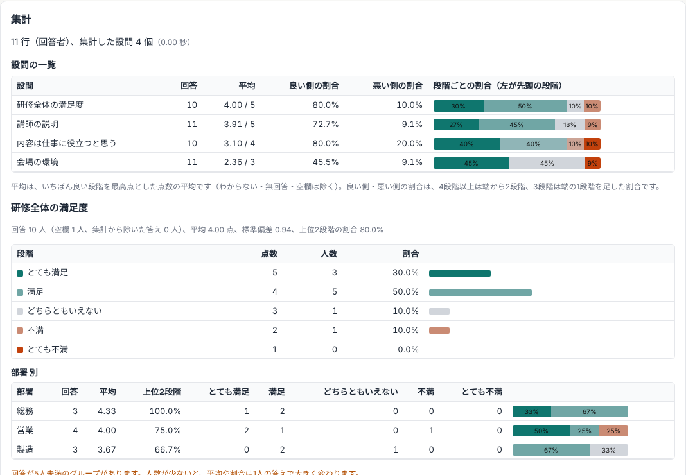

段階評価のアンケート集計
研修・講座・イベント・店のアンケートでよく使う、「とても満足〜とても不満」「そう思う〜そう思わない」「1〜5」のような段階で答える設問の集計表を作ります。設問ごとの人数・割合・平均点と、段階ごとの割合を色の帯で並べた一覧を出し、部署・学年・会場などのグループ別の表も作れます。A4 で印刷してそのまま報告に使えます。ソフトのインストールは不要で、いつものブラウザで動きます。
お試し版はすべての機能を使えて、集計・印刷・保存は先頭30行までです。決済が終わると、そのまま製品版の画面に移動します。ブックマークしておけば何度でも使えます。

見本のデータ（架空の研修のアンケート11件）を集計した例。氏名は説明用のもので、実在の人とは関係ありません。
こんなときに
- 研修や講座のあとのアンケートの満足度を、毎回 Excel で COUNTIF を並べて集計している
- 「とても満足」などの言葉のままでは平均が出せず、1つずつ点数に置き換えている
- 設問が何問もあり、段階ごとの割合を並べた帯グラフのような表を報告書に入れたい
- 部署別・回ごと・会場ごとに満足度を比べたい
できること
- 段階を自動で見分ける：「とても満足／満足／どちらともいえない／不満／とても不満」「満足／やや満足／普通／やや不満／不満」「そう思う／ややそう思う／あまりそう思わない／そう思わない」「良い／普通／悪い」「1〜5」「0〜10」などを、回答から読み取って良い順に並べます。「大変満足」「非常に満足」と「とても満足」、「普通」と「どちらとも言えない」のような書き方の違いは同じ段階として数えます。違っていれば、段階の一覧を書き直せます
- 設問の一覧：設問ごとの回答数・平均点・良い側（上位2段階）と悪い側の割合と、段階ごとの割合を色の帯で並べた表
- 設問ごとの表：段階ごとの点数・人数・割合、平均・標準偏差。わからない・無回答・空欄は除いて数え、その人数も出します
- グループ別：部署・学年・会場などの列を選ぶと、グループごとの回答数・平均・上位2段階の割合・段階ごとの人数を並べます。回答が5人未満のグループがあれば知らせます
- 段階にない答え（「最高」など、段階の一覧にない答え）は集計に入れず、行番号つきで一覧にします
- 低いほど良い設問（「待ち時間の長さ」など）は、点数を逆にできます
- 保存と印刷：集計表（Excel ファイル・CSV、A4 縦で印刷）、元の表の各設問の右に「点数」の列を足した表（Excel ファイル・CSV）
- CSV（UTF-8・Shift_JIS）と Excel ファイル（.xlsx）を読めます。Excel の表をコピーして貼り付けても使えます
できないこと（購入前にご確認ください）
- 自由記述の文章は集計しません（段階で答える設問だけを数えます）
- 「当てはまるものをすべて選ぶ」設問は数えません。そちらは 複数選択の回答の分割と集計 をお使いください
- 統計的な検定（差があるかどうかの判定）や、結果の良し悪しの判断・助言はしません
- グラフの画像は作りません（画面と印刷の表に、段階ごとの割合の帯が入ります）
- フォームのサービスにつないで回答を取ってくる機能はありません。回答を CSV か Excel ファイルに書き出してから読み込んでください
- スマートフォンでは操作しにくいため、パソコンでお使いください
Excel だけで集計するなら
B 列に「とても満足〜とても不満」の回答があるとき、C2 に
=IFERROR(6-MATCH(B2,{"とても満足","満足","どちらともいえない","不満","とても不満"},0),"")
と入れて下までコピーすると、とても満足＝5 〜 とても不満＝1 の点数になります（空欄や「わからない」は空けたまま）。平均は =AVERAGE(C2:C1000)、上位2段階の割合は =(COUNTIF(B2:B1000,"とても満足")+COUNTIF(B2:B1000,"満足"))/COUNT(C2:C1000)、段階ごとの人数は =COUNTIF(B2:B1000,"満足") のように数えられます。
このツールが向いているのは、設問が何問もある、設問ごとに段階の言葉が違う、「大変満足」「普通」のように書き方がまざっている、部署別の表や印刷用の一覧もほしい、毎回のアンケートで同じ作業をくり返す、といった式を組むのに手間がかかるときです。
よくある質問
| データはどこかに送られますか？ | 送られません。読み込み・集計・印刷・保存はすべてお使いのブラウザの中で行います。表題の設定だけをブラウザに保存し、表の中身は保存しません。 |
|---|---|
| 平均点はどう計算しますか？ | いちばん良い段階を最高点（5段階なら5点）、いちばん悪い段階を1点として、回答の点数を平均します。数字で答える設問は、その数字のまま平均します。わからない・無回答・空欄は入れません。 |
| 「良い側の割合」とは？ | 4段階以上の設問は良い側の端から2段階（とても満足＋満足など）、3段階の設問は端の1段階の割合です。 |
| 段階の判定が違っていたら？ | 設問ごとに、段階の一覧（良い順に1行に1つ）を書き直せます。数字の設問は、いちばん低い・高い数字を変えられます。 |
| 何行まで使えますか？ | 製品版は行数の制限はありません。2万行・3問の回答で、読み込みから集計まで1秒ほどでした（パソコンの性能によります）。 |
安心してお使いいただくために
- 表はお使いのブラウザの中だけで処理し、サーバーには送信しません
- 動作環境：最新版の Chrome・Safari・Edge・Firefox（パソコン）
- 説明どおりに動かない場合は、ご購入から7日以内にご連絡いただければ返金します
「当てはまるものをすべて選ぶ」設問は 複数選択の回答の分割と集計、月別×店舗のような集計表は 縦持ち⇔横持ち変換、研修の名札は 名札・席札の一括印刷 もあります。